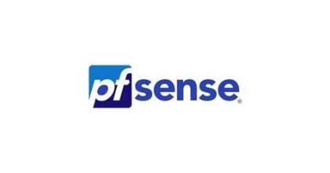

Installation et configuration de GLPI (En équipe)
Installation et configuration de GLPI avec intégration LDAP / Active Directory et déploiement de l'agent GLPI sur le parc informatique.
Compétences : Administration systèmes, gestion de parc
Bonjour, je suis
Spécialisé en Administration systèmes
Passionné par les infrastructures systèmes et réseaux, je conçois, déploie et sécurise des environnements informatiques fiables. Actuellement en recherche d'une alternance pour mettre mes compétences en pratique au sein d'une équipe IT.
![Photo de profil de [PRÉNOM] [NOM]](assets/images/profile-placeholder.svg)
Qui je suis, ce que je recherche
Originaire du Congo-Brazzaville, je me suis progressivement intéressé à l’informatique et aux nouvelles technologies. Après une première formation en informatique, j’ai choisi de poursuivre mes études en BTS SIO option SISR, où je développe mes compétences en systèmes, réseaux, virtualisation et cybersécurité. À travers différents projets pratiques, j’apprends à administrer, sécuriser et résoudre les problèmes liés aux infrastructures informatiques.
Mon objectif est d’intégrer une entreprise en alternance afin de développer mon expérience en systèmes, réseaux et cybersécurité. Après mon BTS SIO, je souhaite poursuivre en Licence Professionnelle ou Bachelor, puis continuer vers un Master ou une école d’ingénierie. À terme, je souhaite évoluer vers un poste d’administrateur systèmes et réseaux, avec une spécialisation en cybersécurité.
Parcours académique et diplôme préparé
Institut F2I — Vincennes
Approfondissement de l'administration des infrastructures, de la supervision et de la cybersécurité, avec réalisation des projets du portefeuille de compétences.
Institut F2I — Vincennes
Acquisition des bases : support utilisateur, systèmes d'exploitation, réseaux TCP/IP, bases de données et développement.
Centre Scolaire Notre Dame du Rosaire — Pointe-Noire
Spécialités Mathématiques, Physique et Chimie.
Option SISR — Solutions d'Infrastructure, Systèmes et Réseaux
Le BTS SIO est un diplôme d'État de niveau 5 (Bac+2) qui forme aux métiers de l'informatique en entreprise. L'option SISR est orientée vers l'infrastructure : elle prépare à installer, administrer, sécuriser et superviser les systèmes et les réseaux d'une organisation, ainsi qu'à assurer le support des utilisateurs.
Elle mène notamment aux postes de technicien d'infrastructure, administrateur systèmes et réseaux, technicien support, ou encore vers une poursuite d'études en licence professionnelle, bachelor ou école d'ingénieurs.
Épreuves écrites : culture générale, mathématiques, CEJM et anglais
Épreuves professionnelles : administration des systèmes et réseaux, cybersécurité
Portefeuille de compétences et soutenance des réalisations professionnelles
Stages ou alternance en entreprise sur les deux années de formation
Expériences professionnelles
F2I — Vincennes
Inventaire et gestion du parc informatique
Diagnostic et réparation de pannes matériels
-Ajout des postes au domaine Active Directory et création de comptes utilisateurs et accès
F2I — Vincennes
-Installation et configuration de postes clients sous Windows 10/11
-Paramétrage des adresses IP fixes, du DNS et de la passerelle pour l'intégration au réseau interne
-Ajout des postes au domaine Active Directory et création de comptes utilisateurs et accès
Compétences développées : [compétence A, compétence B]
Compétences validées dans le cadre du BTS SIO — SISR
Ce document récapitule, pour chaque compétence du référentiel BTS SIO — SISR, les projets et situations professionnelles rencontrés, le contexte, les technologies utilisées, les missions réalisées et les résultats obtenus.
Aperçu du document — cliquez sur « Ouvrir le tableau » pour la version complète.
Technologies et outils maîtrisés
Réalisations techniques
Installation et configuration de GLPI avec intégration LDAP / Active Directory et déploiement de l'agent GLPI sur le parc informatique.
Compétences : Administration systèmes, gestion de parc
Mise en place d'un serveur AD DS avec DNS et DHCP, incluant un serveur de secours et un basculement DHCP pour la redondance.
Compétences : Administration réseaux
Mise en place d'un outil d'analyse de trafic réseau sur un système Linux.
Compétences : Virtualisation, administration systèmes

Installation et configuration d'un pare-feu pfSense avec règles de filtrage et mise en place d'un VPN. (En équipe)
Compétences : Cybersécurité, réseaux
Diplômes et attestations de réussite
![Logo de la certification [NOM DE LA CERTIFICATION]](Image/CISCO.JPG)
CISCO
Mon sujet de veille et son dossier complet
[Expliquez ici le thème choisi et pourquoi il vous intéresse dans le cadre du BTS SIO SISR.]
Je réalise ma veille à l'aide de Google Alertes, configurées sur les mots-clés liés à mon domaine (réseaux, cybersécurité, virtualisation), complétées par la consultation régulière de sites spécialisés et de flux RSS.
Voir mes Google Alertes[Votre analyse personnelle : ce que vous en retenez, l'impact sur votre pratique professionnelle et vos projets.]
Aperçu du dossier — cliquez sur « Ouvrir le dossier » pour la version complète.
Une question, une opportunité ? N'hésitez pas à me contacter.
Bussy Saint-Georges, France